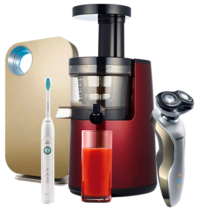

XXXX家电
服务热线
400X-XXX-XXX
网站首页
关于我们
产品中心
新闻动态
人才招聘
联系我们

好货不用等
正品保证,送货上门
XXXX-XXXXXXXXX
新闻动态
网站首页
>>
新闻动态
行业新闻
公司新闻
行业新闻
北九三学社建议把"家电下乡"惠民政策落实到位
2015-05-05
“家电下乡”作为中央扩内需的一项重要举措运行一年来，对拉动农村消费，提高农民生活质量， 推动社会主义新农村建设起到了积极作用。
北九三学社建议把"家电下乡"惠民政策落实到位
2015-05-05
自十五大以来我国连续出台惠农政策，这些政策的制度基于一定的理论背景和实际经济形势，一方面，顺应了农民消费能力和需求升级的趋势，取得了一些成 绩；另一方面也暴露了我国惠农政策的一些弊端，如政策实施和制度初表相违背，政策缺乏一个长效机制等。
北九三学社建议把"家电下乡"惠民政策落实到位
2015-05-05
相反，指定商店不送货、不安装调试。只有“售后服务”与“家电”齐“下乡”，“家电下乡”才能真正变成利国利民的惠农好政策。也就是说，好的惠农政策也需要一定的市场环境支持。 2“家电下乡”实施对我国惠农政策的启示
北九三学社建议把"家电下乡"惠民政策落实到位
2015-05-05
为一项惠农强农应对当前国际金融危机、拉动国内消费需求的重要措施，家电下乡工作已于今年2月1日在全国展开。为充分发挥政策作用，19日召开的国务院第51次常务会议决定，进一步加大家电下乡政策实施力度。
北九三学社建议把"家电下乡"惠民政策落实到位
2015-05-05
废旧电器回收条例可能接力家电以旧换新
北九三学社建议把"家电下乡"惠民政策落实到位
2015-05-05
电视保养必读 雷雨天气家电防范技巧
北九三学社建议把"家电下乡"惠民政策落实到位
2015-05-05
冰点出击 新七天电器网五一家电促销
北九三学社建议把"家电下乡"惠民政策落实到位
2015-05-05
车载电器将成消费新宠
共有
48
条记录
1
2
3
...
6
下一页
尾页